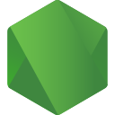
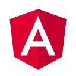

Linux Server
ตั้งค่าเซิร์ฟเวอร์ Ubuntu ใหม่ด้วยสคริปต์ทั้ง SSH, firewall และเครื่องมือพื้นฐาน แล้วดูแลต่อบนเครื่องจริง
@siwapanD · @KhunchayNe
เจ้าหน้าที่วิเคราะห์ระบบงานคอมพิวเตอร์ ฝ่ายแอปพลิเคชันโซลูชัน
ศูนย์นวัตกรรมดิจิทัล มหาวิทยาลัยวลัยลักษณ์
Senior Backend & Full-Stack Developer · DevOps & Infrastructure
ช่วยเปลี่ยนงานที่ทำมือหรือกระจัดกระจาย ให้เป็นระบบเว็บที่ใช้งานได้จริง ตั้งแต่ออกแบบฐานข้อมูล เขียน API ไปจนถึงติดตั้งบน Linux, Docker และ Cloudflare เปิดรับงานแบบ remote ทั้ง contract และรายโปรเจกต์
ดูแลตั้งแต่เครื่อง Linux, Docker, Cloudflare และ DNS ไปจนถึงระบบ GIS เน้นให้ติดตั้งซ้ำได้ ตรวจสอบย้อนหลังได้ และกู้คืนได้เมื่อเกิดปัญหา
ตั้งค่าเซิร์ฟเวอร์ Ubuntu ใหม่ด้วยสคริปต์ทั้ง SSH, firewall และเครื่องมือพื้นฐาน แล้วดูแลต่อบนเครื่องจริง
รันแอปและฐานข้อมูลด้วย container แยกแต่ละบริการด้วย Compose และ build image เองเมื่อต้องเพิ่มส่วนขยาย
เปิดบริการจาก server สู่ภายนอกผ่าน Cloudflare Tunnel แบบ Zero Trust พร้อมจัดการโดเมน DNS และ SSL ให้เป็นระบบ
วาง GIS stack ด้วย Docker ให้ GeoServer ต่อกับ PostGIS และเผยแพร่ layer ผ่าน WFS รวมถึงบริการรวมข้อมูลดิน น้ำ และอากาศ
ฐานข้อมูลกลางที่ใช้ร่วมกันหลายโปรเจกต์ แยกฐานและ role ตามโปรเจกต์ พร้อมเครื่องมือสำรองและกู้คืนข้อมูล
รวมข้อมูลเซิร์ฟเวอร์ โดเมน DNS SSL และ credential ไว้ที่เดียว คุมสิทธิ์ด้วย RBAC มี audit log และใช้ pipeline สำหรับ build และ deploy
ดูตัวอย่างโค้ดได้ที่ ubuntu-setup และ 2026-Docker-RealWorld-AI-Application
เปลี่ยนงานที่ทำมือให้เป็นระบบ
จองเองได้ใน 3 ขั้นตอน
แทน: รับจองและตรวจสลิปด้วยมือ
คะแนนและงบคำนวณอัตโนมัติ
แทน: รวบรวมและคำนวณหลายระดับ
รายงานออกจากฐานข้อมูลโดยตรง
แทน: คำนวณยอดรายเดือนด้วยมือ
เห็นเครื่องมีปัญหาในหน้าเดียว
แทน: ให้ช่างตรวจทีละเครื่อง
เริ่มโปรเจกต์ใหม่ได้เร็วขึ้น
แทน: ตั้งฐานข้อมูลแยกทุกงาน
เรียกข้อมูลแผนที่จากจุดเดียว
แทน: ข้อมูลกระจายหลายแหล่ง
สรุปจากโค้ดและ README ของ repo ที่เป็นงานของตัวเองจากทั้ง 2 บัญชี ไม่นับ fork
เว็บแอปและ API ที่มีระบบสิทธิ์และ workflow หลายขั้นตอน
ออกแบบฐานข้อมูลกลาง แยก role ตามงาน และเขียน SQL สำหรับรายงานบน production
รวมข้อมูลดิน น้ำ อากาศ และเผยแพร่เป็น API หรือ layer แผนที่ให้ระบบอื่นใช้ต่อ
AI gateway, NL-to-SQL ที่คุมสิทธิ์ และแม่แบบให้ coding agent ทำงานต่อได้อย่างมีมาตรฐาน
ติดตั้งเซิร์ฟเวอร์ จัดการ container ระบบสำรองข้อมูล และการเก็บ credential พร้อม audit log
แอป macOS และ iOS รวมถึงงาน capture และ encode หน้าจอด้วยฮาร์ดแวร์
ประสบการณ์ที่ระบุในโปรไฟล์ GitHub: ระบบ FinTech และการเชื่อม API, Library Automation, Smart Kiosk, Acquisition Module, การ sync ข้อมูลจากฐานข้อมูล Oracle, การ deploy บน Ubuntu และ IIS, การให้คำปรึกษาด้านเทคนิค

Node.js
Angular| เดือน | Contributions |
|---|
เปิดรับงานแบบ remote ทั้ง contract และรายโปรเจกต์ รับงานผ่าน Fastwork ที่บัญชี @add หรือติดต่อโดยตรงได้
ระบบจอง อนุมัติ และรายงานที่พร้อมใช้งาน
Linux, Docker, โดเมน, SSL, Cloudflare และคู่มือส่งมอบ
GeoServer, PostGIS และ API ข้อมูลแผนที่